A visual catalogue of every drawable in SeqPlotR: primitives
(seq_point, seq_line,
seq_segment, seq_curve, seq_path,
seq_poly, seq_area, seq_text),
composites (seq_bar, seq_ribbon,
seq_density, seq_tile,
seq_lollipop, seq_gene,
seq_sequence), the ideogram, and the scalebar. Windows,
margins and layouts are covered in vignette("layouts").
library(SeqPlotR)
#>
#> Attaching package: 'SeqPlotR'
#> The following object is masked from 'package:base':
#>
#> %||%
library(GenomicRanges)
#> Loading required package: stats4
#> Loading required package: BiocGenerics
#> Loading required package: generics
#>
#> Attaching package: 'generics'
#> The following objects are masked from 'package:base':
#>
#> as.difftime, as.factor, as.ordered, intersect, is.element, setdiff,
#> setequal, union
#>
#> Attaching package: 'BiocGenerics'
#> The following objects are masked from 'package:stats':
#>
#> IQR, mad, sd, var, xtabs
#> The following objects are masked from 'package:base':
#>
#> anyDuplicated, aperm, append, as.data.frame, basename, cbind,
#> colnames, dirname, do.call, duplicated, eval, evalq, Filter, Find,
#> get, grep, grepl, is.unsorted, lapply, Map, mapply, match, mget,
#> order, paste, pmax, pmax.int, pmin, pmin.int, Position, rank,
#> rbind, Reduce, rownames, sapply, saveRDS, table, tapply, unique,
#> unsplit, which.max, which.min
#> Loading required package: S4Vectors
#>
#> Attaching package: 'S4Vectors'
#> The following object is masked from 'package:utils':
#>
#> findMatches
#> The following objects are masked from 'package:base':
#>
#> expand.grid, I, unname
#> Loading required package: IRanges
#> Loading required package: Seqinfo
# single window used for most demos
win <- GRanges("chr1", IRanges(1e6, 3e6))Several examples use simulated tumour data shipped with the package:
a BFB amplicon on chr2 (bfb), whole-genome doubling on
chr1-3 (wgd), chromothripsis on chr3 (ct) and
chromothripsis with BFB on chr4 (ct_bfb). Each scenario has
copy-number segments, SVs and SNVs with a variant allele fraction
(VAF).
sim <- function(sc, f) {
utils::read.delim(system.file("extdata", "sim", sc, f, package = "SeqPlotR"))
}
seg_to_gr <- function(d) {
GRanges(d$chrom, IRanges(d$start, d$end),
cn = d$cn, cn_major = d$cn_major, cn_minor = d$cn_minor, baf = d$baf)
}
snv_to_gr <- function(d) {
GRanges(d$chrom, IRanges(d$pos, width = 1),
vaf = d$vaf, sbs6 = d$sbs6, mult = as.character(d$truth_mult))
}
bfb_snv <- snv_to_gr(sim("bfb", "snvs.tsv"))
bfb_seg <- seg_to_gr(sim("bfb", "segments.tsv"))
bfb_win <- GRanges("chr2", IRanges(1.75e8, 2.05e8))
wgd_snv <- snv_to_gr(sim("wgd", "snvs.tsv"))
ct_seg <- seg_to_gr(sim("ct", "segments.tsv"))
ct_win <- GRanges("chr3", IRanges(9.5e7, 1.95e8))
ctb_seg <- seg_to_gr(sim("ct_bfb", "segments.tsv"))
ctb_sv <- sim("ct_bfb", "svs.tsv")
ctb_sv <- GRanges(ctb_sv$chrom1, IRanges(ctb_sv$pos1, width = 1),
jcn = ctb_sv$jcn, sv_type = ctb_sv$sv_type)
ctb_win <- GRanges("chr4", IRanges(5.8e7, 1.24e8))Primitives
Every primitive shares the same three-stage contract
(initialize → prep → draw) and
the same shorthand:
seq_<name>(map(...), aesthetics = aes(...)). What
differs is the map() vocabulary each one consumes.
Per-track data + mapping are inherited, so a
single seq_track() can host several primitives drawing from
the same table.
seq_point — one glyph per observation
Required map() fields: x, y.
Optional: color, fill, size,
shape, alpha.
Below, each SNV from a simulated BFB amplicon on chr2 is a point at
its position, with VAF on y, coloured by the true number of
mutated copies (mult). SNVs inside the amplified region
carry several copies.
seq_plot(aesthetics = aes(margins = list(top = 0, right = 0.12,
bottom = 0, left = 0))) %|%
seq_track(data = bfb_snv,
mapping = map(x = start, y = vaf),
windows = bfb_win) %+%
seq_point(map(color = mult),
aesthetics = aes(size = 0.5, alpha = 0.8)) -> p
p$plot()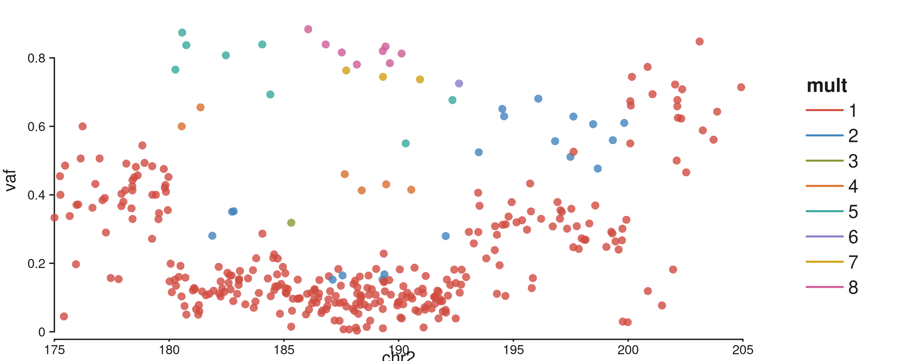
seq_line — connected line through points
Required: x, y.
aes(type = "step") switches to a step line (useful for
signal tracks that represent piecewise-constant values).
Below, the simulated BFB amplicon on chr2 is shown as the mean SNV VAF in 1 Mb bins (smooth) and as the piecewise-constant copy number of each segment (step). Both rise across the amplified region.
bfb_win_snv <- subsetByOverlaps(bfb_snv, bfb_win)
bin_start <- seq(start(bfb_win), end(bfb_win) - 1e6, by = 1e6)
bin_id <- factor(findInterval(start(bfb_win_snv), bin_start), seq_along(bin_start))
bfb_bins <- GRanges("chr2", IRanges(bin_start + 5e5, width = 1),
mean_vaf = as.vector(tapply(bfb_win_snv$vaf, bin_id, mean)),
n_snv = as.vector(table(bin_id)))
seq_plot() %|%
seq_track(track_id = "Mean VAF",
data = bfb_bins,
mapping = map(x = start, y = mean_vaf),
windows = bfb_win) %+%
seq_line(aesthetics = aes(color = "#205EA6", linewidth = 1.4)) %__%
seq_track(track_id = "Copy number",
data = bfb_seg,
mapping = map(x = start, y = cn),
windows = bfb_win) %+%
seq_line(aesthetics = aes(color = "#AF3029",
linewidth = 1.4,
type = "step")) -> p
p$plot()
#> 1 out-of-bounds data points excluded! (seq_line)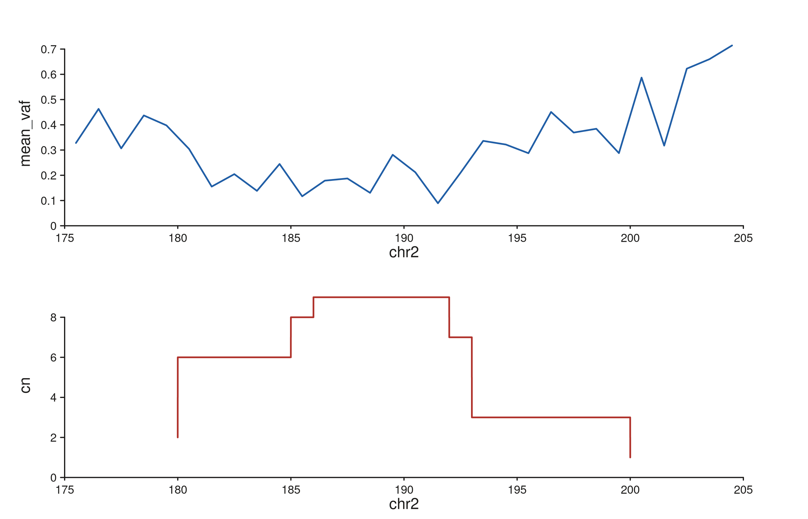
seq_segment — one straight line per row
Required: x, x_end, y,
y_end. Great for quick interval marks — a peak span, a read
pair, a Manhattan-style baseline. Below, each copy-number segment of a
simulated chromothripsis event on chr3 is a horizontal line at its total
copy number; the oscillation between CN 3 and CN 1 is the chromothripsis
signature.
seq_plot() %|%
seq_track(data = ct_seg,
mapping = map(x = start, x_end = end,
y = cn, y_end = cn),
windows = ct_win) %+%
seq_segment(aesthetics = aes(linewidth = 3, color = "#205EA6")) -> p
p$plot()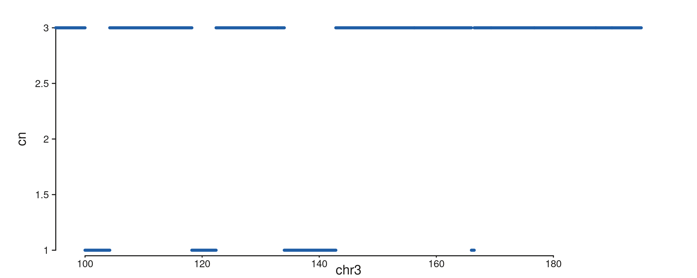
seq_curve — Bezier curve with data-space control
points
Required: x, y, x_end,
y_end. aes(curvature) sets the fractional
y-offset of the control points (default 0.3). Handy for
visualising directional relationships (a transcript splice, a read pair)
without stealing the arch slot (seq_arc) used for SV
calls.
curve_gr <- GRanges("chr1",
IRanges(start = c(1.2e6, 1.7e6, 2.3e6), width = 1),
x_end = c(1.5e6, 2.1e6, 2.7e6),
y = c(0.2, 0.3, 0.25),
y_end = c(0.5, 0.7, 0.6))
seq_plot() %|%
seq_track(data = curve_gr,
mapping = map(x = start, x_end = x_end,
y = y, y_end = y_end),
windows = win) %+%
seq_curve(aesthetics = aes(curvature = 0.5,
color = "#66800B",
linewidth = 1.4)) -> p
p$plot()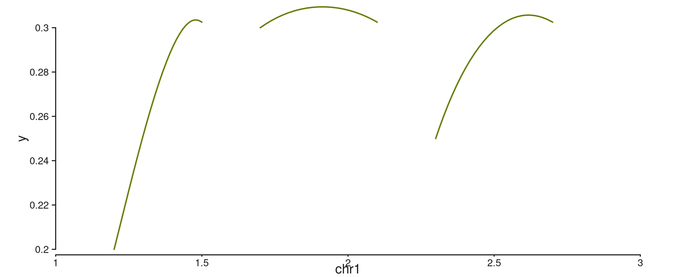
seq_path — poly-line through grouped points
Required: x, y. Optional group
splits the path into several disconnected lines. Good for plotting
per-group traces on one track.
group_xs <- seq(1.05e6, 2.95e6, length.out = 30)
path_gr <- GRanges("chr1",
IRanges(start = rep(group_xs, 3), width = 1),
y = c(sin((group_xs - 1e6) / 5e5) * 0.2 + 0.4,
cos((group_xs - 1e6) / 4e5) * 0.2 + 0.5,
((group_xs - 1e6) / 2e6) * 0.3 + 0.3),
trace = rep(c("A", "B", "C"), each = 30))
seq_plot() %|%
seq_track(data = path_gr,
mapping = map(x = start, y = y,
group = trace, color = trace),
windows = win) %+%
seq_path(aesthetics = aes(linewidth = 1.3, alpha = 0.85)) -> p
p$plot()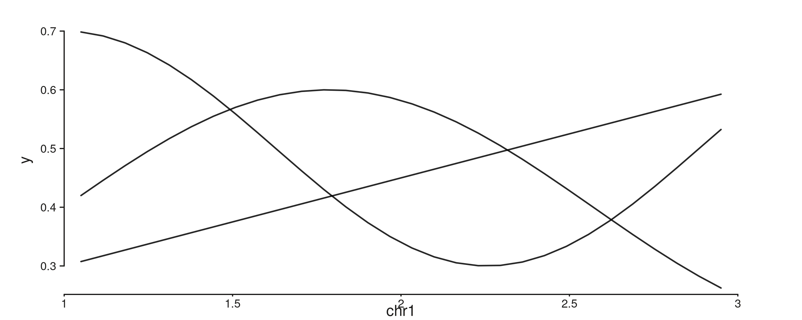
seq_poly — filled polygon(s) from vertices
Required: x, y. Optional group
partitions vertices across multiple polygons. Use for custom region
highlights and hand-shaped overlays. Below: three filled triangles, one
per gene body.
tri_starts <- c(1.20e6, 1.80e6, 2.40e6)
tri_widths <- c(2.5e5, 3.0e5, 2.0e5)
poly_gr <- GRanges("chr1",
IRanges(start = rep(tri_starts, each = 3), width = 1),
x_v = c(rbind(tri_starts,
tri_starts + tri_widths / 2,
tri_starts + tri_widths)),
y_v = rep(c(0.2, 0.8, 0.2), times = 3),
grp = rep(paste0("tri", 1:3), each = 3))
seq_plot() %|%
seq_track(data = poly_gr,
mapping = map(x = x_v, y = y_v,
group = grp, fill = grp),
windows = win) %+%
seq_poly(aesthetics = aes(color = "white", alpha = 0.8)) -> p
p$plot()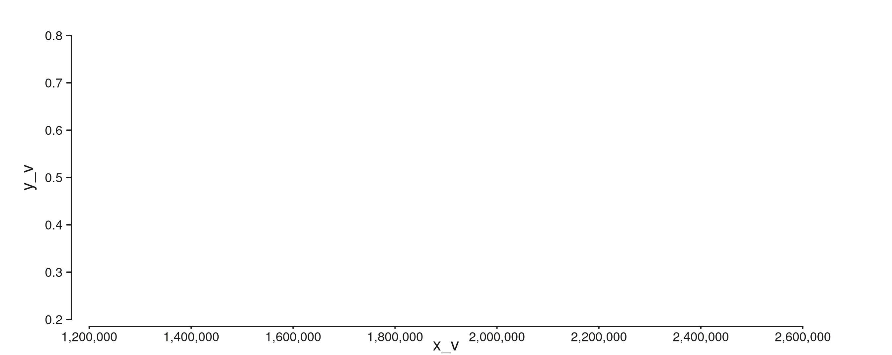
seq_area — filled area under a curve
Required: x, y. Optional
aes(baseline = ...) sets the closing y-value (default
0). Coverage curves, pileups, smoothed density fills.
Below, the number of SNVs per 1 Mb bin of the simulated BFB amplicon on chr2; mutation counts climb with copy number.
seq_plot() %|%
seq_track(data = bfb_bins,
mapping = map(x = start, y = n_snv),
windows = bfb_win) %+%
seq_area(aesthetics = aes(fill = "#4385BE",
color = "#205EA6",
alpha = 0.65,
linewidth = 0.8)) -> p
p$plot()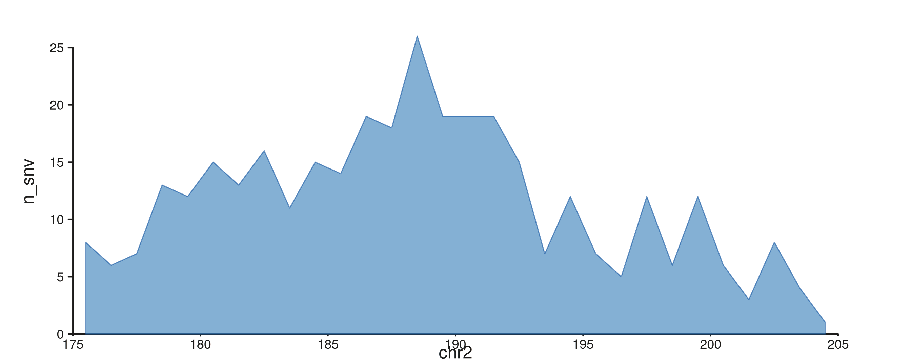
seq_text — per-observation labels
Required: x, y, label.
Optional: size, color, angle,
hjust, vjust.
text_gr <- GRanges("chr1",
IRanges(start = c(1.30e6, 1.90e6, 2.50e6), width = 1),
y_pos = c(0.75, 0.45, 0.85),
lbl = c("peak_1", "peak_2", "peak_3"))
seq_plot() %|%
seq_track(data = text_gr,
mapping = map(x = start, y = y_pos, label = lbl),
windows = win) %+%
seq_text(aesthetics = aes(fontsize = 12,
color = "#AF3029",
hjust = 0.5)) -> p
p$plot()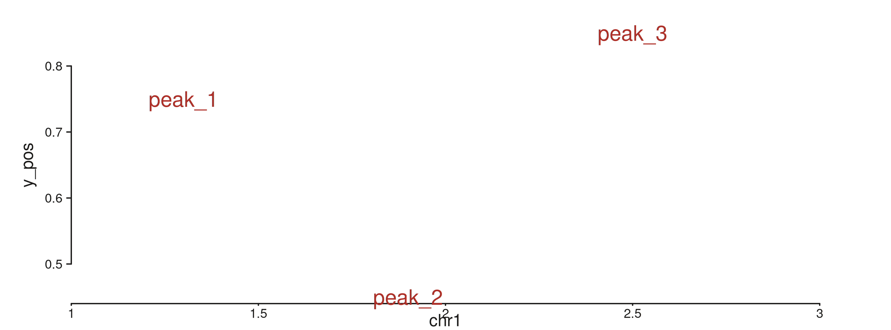
Composites
Composites chain primitives (often plus a small amount of
pre-computation) to provide higher-level idioms. Each composite inherits
from its underlying primitive and exposes a narrower, task-specific
map() vocabulary.
seq_bar — per-interval rectangles
One rectangle per observation; group stacks bars at
identical x positions. Below, each segment of a simulated chromothripsis
and BFB event on chr4 is a bar spanning the segment, with height equal
to its copy number.
seq_plot() %|%
seq_track(data = ctb_seg,
mapping = map(x = start, y = cn),
windows = ctb_win,
scale_y = seq_scale_continuous(limits = c(0, 6))) %+%
seq_bar(aesthetics = aes(fill = "#4385BE")) -> p
p$plot()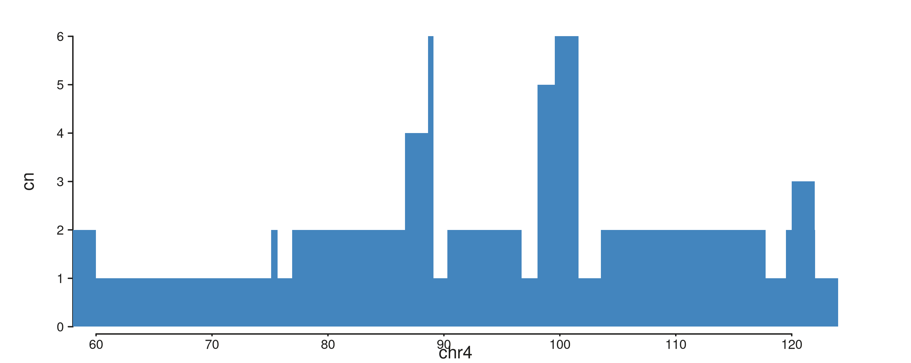
Stacked bars
Supplying a group mapping causes bars at identical x
positions to stack. Colors are drawn from the Flexoki palette keyed on
group level.
stack_gr <- GRanges(
"chr1",
IRanges(start = rep(seq(1.2e6, 2.8e6, by = 2e5), each = 3), width = 5e4),
value = runif(27, 0.1, 0.5),
category = rep(c("A", "B", "C"), times = 9)
)
seq_plot() %|%
seq_track(data = stack_gr,
mapping = map(x = start, y = value, group = category),
windows = win) %+%
seq_bar() -> p
p$plot()
#> 8 out-of-bounds data points excluded! (seq_bar)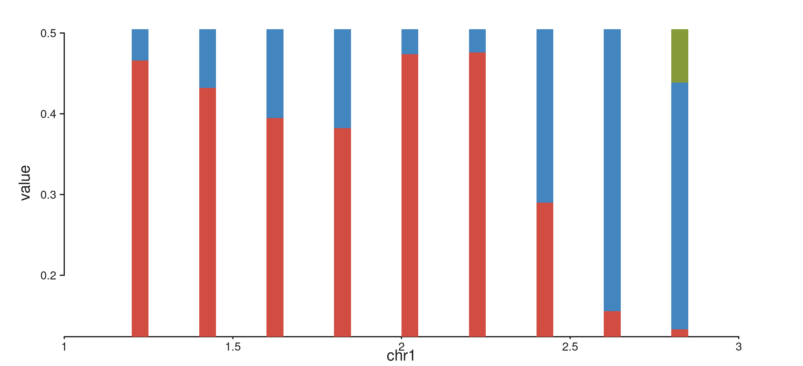
seq_ribbon — band between two y series
Required: y_min, y_max. Confidence bands,
min/max pileups, CI envelopes — anything that needs a shaded interval
per x. Below, the band between the minor and major allele copy number of
the simulated chr4 event; the band collapses to zero width in balanced
segments and sits on the major allele where the minor allele is
lost.
# one point at each segment edge so the band is piecewise constant
ctb_edges <- GRanges("chr4",
IRanges(c(start(ctb_seg), end(ctb_seg)), width = 1),
cn_minor = rep(ctb_seg$cn_minor, 2),
cn_major = rep(ctb_seg$cn_major, 2))
ctb_edges <- sort(ctb_edges)
seq_plot() %|%
seq_track(data = ctb_edges,
mapping = map(x = start, y_min = cn_minor, y_max = cn_major),
windows = ctb_win,
scale_y = seq_scale_continuous(limits = c(0, 3))) %+%
seq_ribbon(aesthetics = aes(fill = "#4385BE", alpha = 0.5)) -> p
p$plot()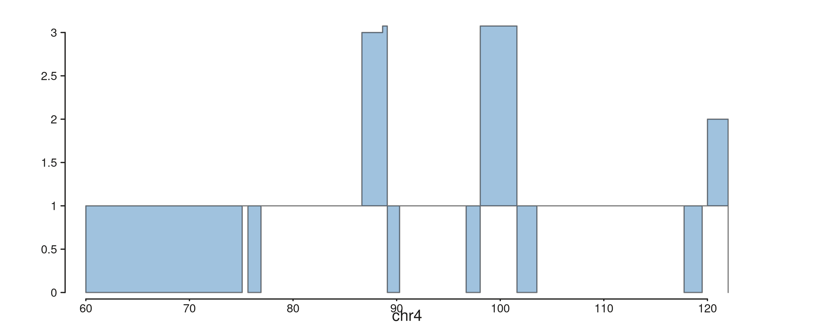
seq_density — kernel density estimate
Calls stats::density() on the resolved y
and renders the result as a filled area. Pre-computed densities should
use seq_area() directly. Below, the VAF of SNVs from a
simulated whole-genome-doubling tumour on chr1-3. The density runs along
the x-axis (VAF, 0 to 1) and bw sets the bandwidth; the
modes come from SNVs carried by one, two or four copies.
seq_plot() %|%
seq_track(data = wgd_snv,
mapping = map(x = start, y = vaf),
windows = GRanges("chr1", IRanges(1, 248956422)),
scale_x = seq_scale_continuous(limits = c(0, 1)),
scale_y = seq_scale_continuous(limits = c(0, 1)),
aesthetics = aes("axis.y1.visible" = FALSE,
"axis.x1.title.text" = "VAF")) %+%
seq_density(aesthetics = aes(fill = "#879A39", alpha = 0.7, bw = 0.02)) -> p
p$plot()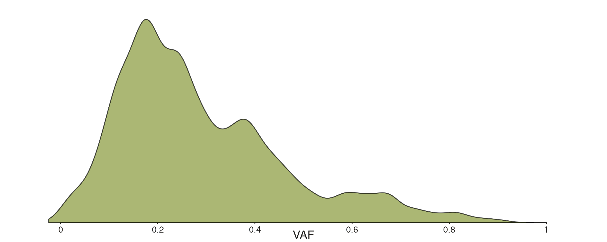
seq_tile — rectangles per interval
Flat mode: one rectangle per observation, here one tile per segment
of the simulated chr4 event, shaded by the B-allele frequency
(baf; 0.5 is balanced, 1 is LOH). Rotated mode
(aes(rotate = TRUE)) turns each tile into a diamond, the
standard Hi-C representation when combined with a genomic y-axis (see
below).
baf_ramp <- grDevices::colorRampPalette(c("#DAD8CE", "#205EA6"))(100)
ctb_seg$baf_col <- baf_ramp[round((ctb_seg$baf - 0.5) / 0.5 * 99) + 1]
seq_plot() %|%
seq_track(data = ctb_seg,
mapping = map(x = start, fill = baf_col),
windows = ctb_win) %+%
seq_tile() -> p
p$plot()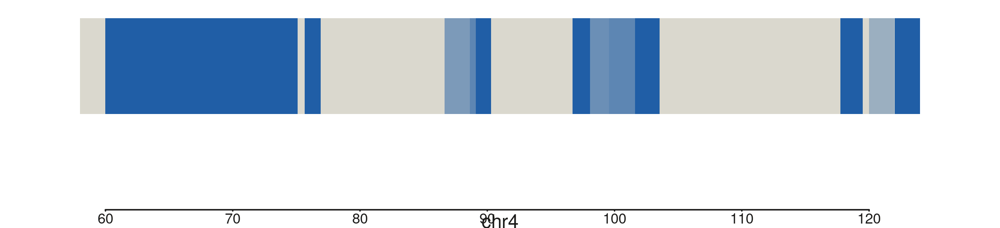
Rotated tiles
Rotated tiles (aes(rotate = TRUE)) place each
observation as a diamond in (genomic_x, genomic_y) space —
the natural representation for Hi-C contacts or any 2D genomic
relationship. Both axes are genomic; pass a
seq_scale_genomic() scale_y built from the
distance-bin GRanges.
n_contacts <- 60
hic_win <- GRanges("chr1", IRanges(1e6, 3e6))
# Toy Hi-C: pick x-bins, then y-bins offset by a genomic distance.
x_starts <- sample(seq(1.05e6, 2.95e6, by = 2e4), n_contacts, replace = TRUE)
y_offset <- sample(seq(2e4, 8e5, by = 2e4), n_contacts, replace = TRUE)
x_gr <- GRanges("chr1", IRanges(start = x_starts, width = 2e4),
score = runif(n_contacts))
y_gr <- GRanges("chr1", IRanges(start = x_starts + y_offset, width = 2e4))
# Map [0,1] scores → a soft red ramp for the fill column.
score_to_color <- function(s) {
pal <- grDevices::colorRampPalette(c("#F4A4C2", "#A02C6D"))(100)
pal[pmin(pmax(round(s * 99) + 1, 1), 100)]
}
x_gr$fill_col <- score_to_color(x_gr$score)
seq_plot() %|%
seq_track(data = x_gr,
mapping = map(x = start, fill = fill_col),
windows = hic_win,
scale_y = seq_scale_genomic(
GRanges("chr1", IRanges(0, max(y_offset) + 2e4)))) %+%
seq_tile(data2 = y_gr, aesthetics = aes(rotate = TRUE)) -> p
p$plot()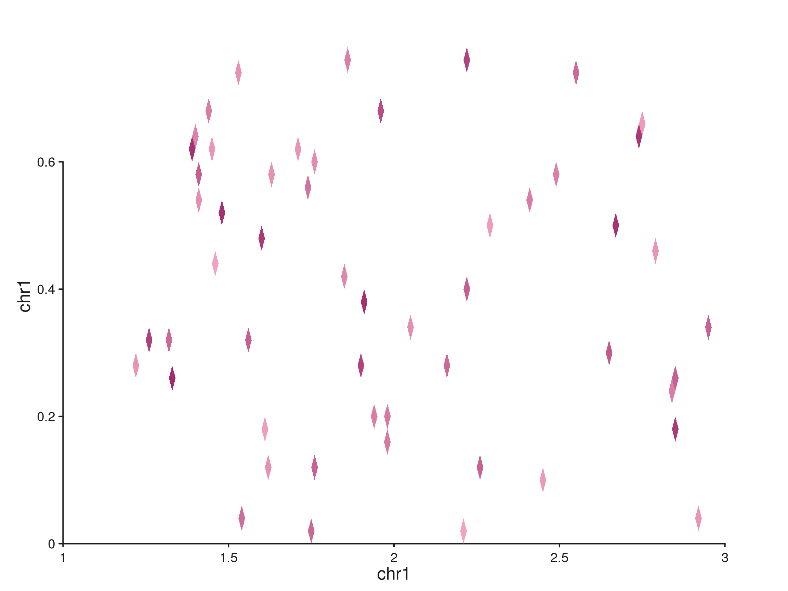
seq_lollipop — stem + point
Vertical stem from baseline (default 0) up
to y, with a point at y. Standard for sparse
discrete events (mutation impact, peak summits). Below, the junctions of
the simulated chr4 event, placed at their first breakpoint with height
equal to the junction copy number (jcn).
seq_plot() %|%
seq_track(data = ctb_sv,
mapping = map(x = start, y = jcn),
windows = ctb_win,
scale_y = seq_scale_continuous(limits = c(0, 5.5))) %+%
seq_lollipop(aesthetics = aes(color = "#AF3029", linewidth = 1.2)) -> p
p$plot()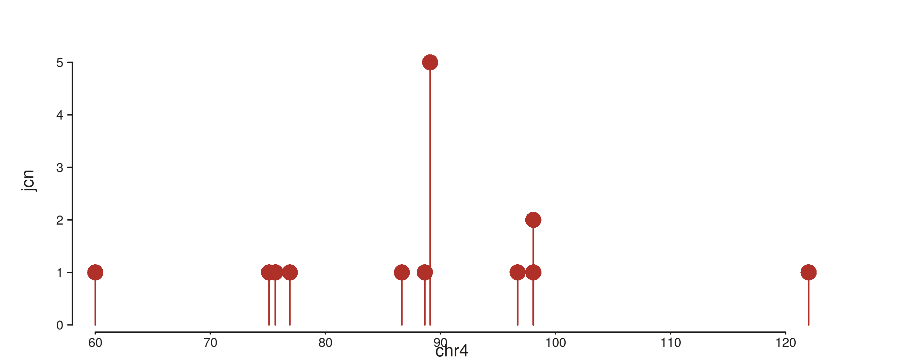
seq_gene — format-agnostic gene models
Every column reference comes through map():
group joins features into one gene, strand
orients the arrows, type distinguishes exons from UTRs,
label places the gene name, color tints each
gene.
# reused by the gene examples below
gm <- map(group = gene_id, type = feature, strand = strand_col,
label = gene_name, color = color)
gene_gr <- GRanges("chr1",
IRanges(
start = c(1.10e6, 1.20e6, 1.35e6, 1.50e6, 1.58e6,
1.90e6, 2.05e6, 2.18e6, 2.30e6,
2.55e6, 2.68e6, 2.80e6),
width = c( 3e4, 6e4, 4e4, 5e4, 2e4,
4e4, 8e4, 5e4, 3e4,
6e4, 3e4, 5e4)
),
gene_id = rep(c("A", "B", "C"), times = c(5, 4, 3)),
gene_name = rep(c("TP53", "MYC", "BRCA1"), times = c(5, 4, 3)),
strand_col = rep(c("+", "-", "+"), times = c(5, 4, 3)),
feature = c("UTR","exon","exon","exon","UTR",
"UTR","exon","exon","UTR",
"exon","exon","exon"),
color = c(rep("#205EA6", 5),
rep("#AF3029", 4),
rep("#66800B", 3)))
seq_plot() %|%
seq_track(data = gene_gr,
mapping = gm,
windows = win) %+%
seq_gene(gm) -> p
p$plot()Backbone styles
backbone_type controls the gene backbone rendering.
"arrow" (default) places chevron arrows to show strand
direction. "solid" draws a plain line;
"dashed" uses a dashed line — useful for predicted or
low-confidence models.
seq_plot() %|%
seq_track(data = gene_gr,
mapping = gm,
windows = win) %+%
seq_gene(gm,
backbone_type = "dashed") -> p
p$plot()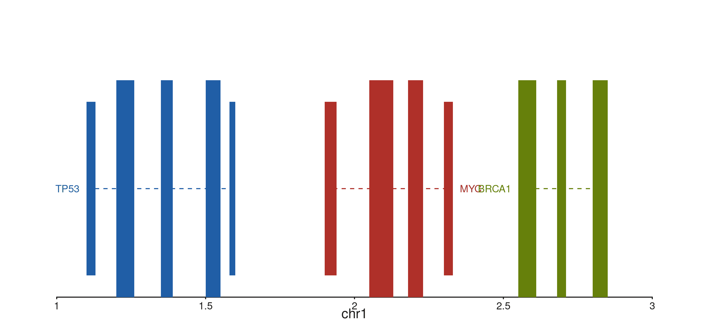
TSS start-site arrow
show_start = TRUE draws a flag arrow above the first
exon (by row order) of each gene. For genes where the annotated first
exon differs from the true TSS, pass
tss_position = list(gene_id = c(start, end)) to override
the auto-detected position per gene.
seq_plot() %|%
seq_track(data = gene_gr,
mapping = gm,
windows = win) %+%
seq_gene(gm,
show_start = TRUE) -> p
p$plot()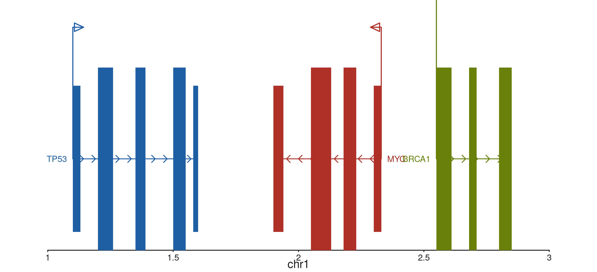
Strand separation
separate_strands = TRUE partitions the track interior
into two horizontal sub-bands: "+" strand genes at the top
and "-" strand genes at the bottom. A dashed line marks the
band boundary and each band is labelled. Silently ignored when only one
strand is present.
seq_plot() %|%
seq_track(data = gene_gr,
mapping = gm,
windows = win) %+%
seq_gene(gm,
separate_strands = TRUE) -> p
p$plot()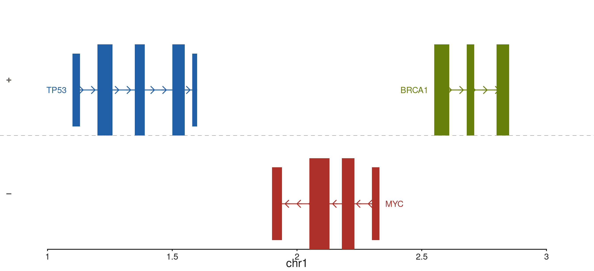
All features combined
separate_strands, show_start, and
backbone_type are independent and compose freely. Here both
are on with a solid backbone — useful when the track already conveys
directionality through the strand band layout.
seq_plot() %|%
seq_track(data = gene_gr,
mapping = gm,
windows = win,
track_height = 1.2) %+%
seq_gene(gm,
backbone_type = "solid",
show_start = TRUE,
separate_strands = TRUE) -> p
p$plot()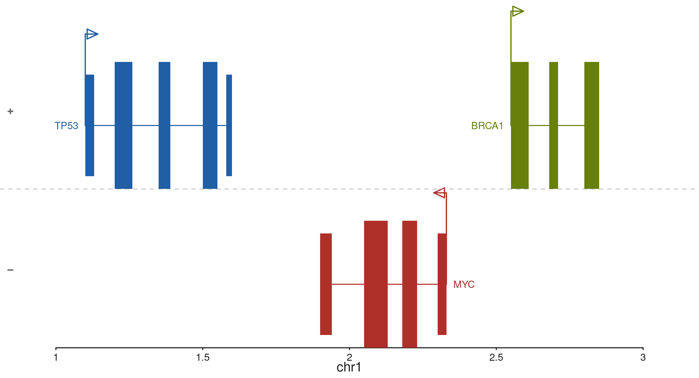
Style type
style_type selects the per-gene rendering style.
"exon" (default) is the full backbone-plus-exon-boxes view
shown above; "gene" collapses each gene to a single
chevron-shaped polygon spanning the gene extent — useful when exon
detail is not needed and screen space is tight; "point"
reduces each gene to a single filled circle at the TSS, ideal for very
dense overviews. Labels are drawn in all three modes.
seq_plot() %|%
seq_track(data = gene_gr,
mapping = gm,
windows = win) %+%
seq_gene(gm,
style_type = "gene") -> p
p$plot()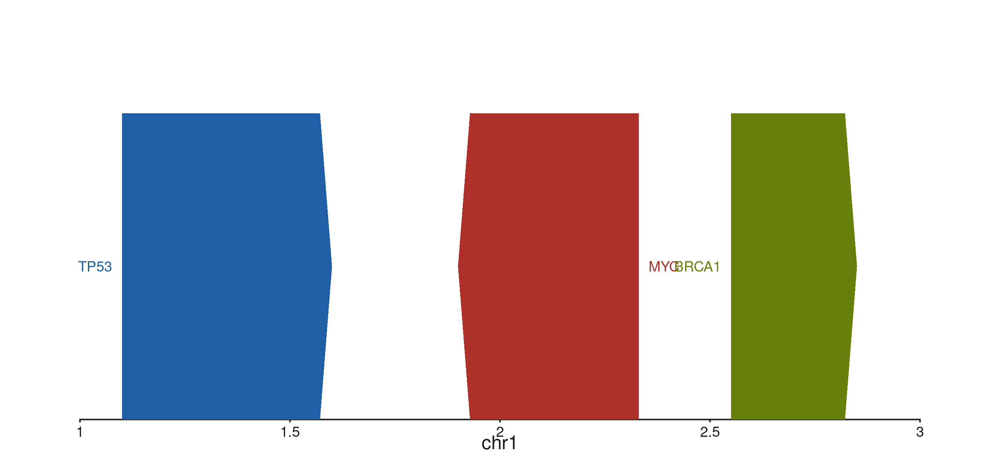
seq_plot() %|%
seq_track(data = gene_gr,
mapping = gm,
windows = win) %+%
seq_gene(gm,
style_type = "point") -> p
p$plot()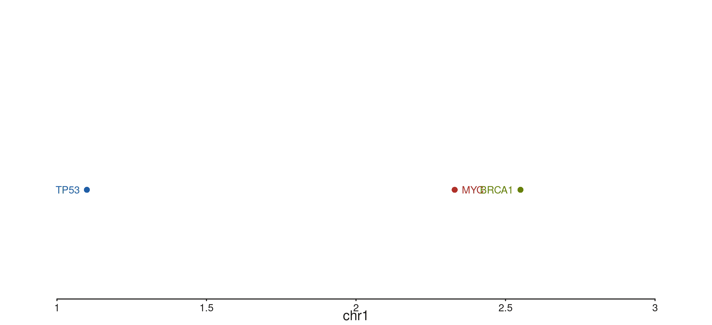
Label placement
aes(gene.label = aes(position = c(<"start"|"end">, <"top"|"bottom">)))
composes label placement independently on x and y.
gr_genes <- GRanges("chr1",
IRanges(start = c(100, 400, 1000, 1500),
end = c(300, 600, 1200, 1700)),
gene_id = c("geneA", "geneA", "geneB", "geneB"),
gene_name = c("GeneA", "GeneA", "GeneB", "GeneB"),
strand_col = c("+", "+", "-", "-"),
feat_type = c("exon", "exon", "exon", "exon")
)
win_g <- GRanges("chr1", IRanges(1, 2000))
p <- seq_plot() %+%
(seq_track(data = gr_genes, windows = win_g) %+%
seq_gene(
map(group = gene_id, label = gene_name,
strand = strand_col, type = feat_type),
aesthetics = aes(
gene.label = aes(position = c("start", "top"),
color = "navy",
size = 0.55)
)
))
p$plot()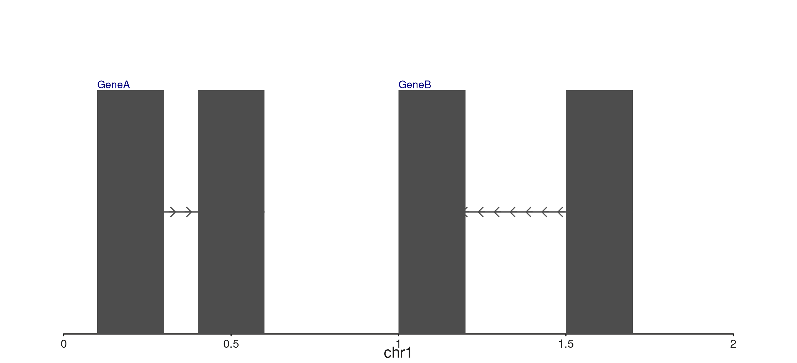
Dense dataset — tier stacking
When genes overlap, seq_gene stacks them into
non-overlapping tiers automatically. With
separate_strands = TRUE each strand band has its own tier
stack, keeping the two strands visually separated even at high gene
density.
set.seed(7)
n_genes <- 14
starts <- sort(sample(seq(1.05e6, 2.6e6, by = 5e4), n_genes))
widths <- sample(seq(5e4, 3e5, by = 2e4), n_genes, replace = TRUE)
strands <- sample(c("+", "-"), n_genes, replace = TRUE)
colors_d <- ifelse(strands == "+", "#205EA6", "#AF3029")
gids_d <- paste0("G", seq_len(n_genes))
dense_gr <- GRanges("chr1",
IRanges(start = starts, width = widths),
gene_id = gids_d,
gene_name = gids_d,
strand_col = strands,
feature = "exon",
color = colors_d)
seq_plot() %|%
seq_track(data = dense_gr,
mapping = gm,
windows = win,
track_height = 1.4) %+%
seq_gene(gm,
separate_strands = TRUE) -> p
p$plot()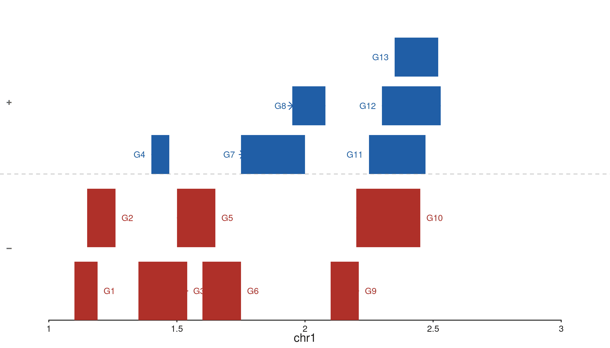
seq_sequence — IGV-style nucleotide display
seq_sequence() renders a coloured rectangle for each
nucleotide in windows up to 200 bp wide. Wider windows emit a message
and render nothing. Colours follow the UCSC standard by default:
A green, T red, C blue,
G orange/gold. Each rectangle is drawn at 99 % of its slot
width so a thin gap separates adjacent bases.
Supply the nucleotides via sequence (a character string)
or have them fetched automatically from a BSgenome package via
genome. Set show_letters = TRUE to overlay the
base letter for windows ≤ 80 bp.
seq50 <- paste(rep(c("A","T","C","G","G","A","C","T","T","A"), 5), collapse = "")
win50 <- GRanges("chr1", IRanges(1, 50))
seq_plot() %|%
seq_track(windows = win50, track_height = 0.7) %+%
seq_sequence(sequence = seq50, show_letters = TRUE) -> p
p$plot()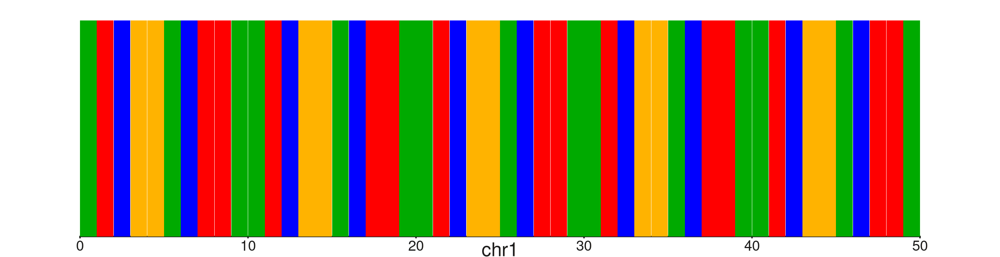
Blocks-only view for wider windows
When the window is between 80 and 200 bp the letters are suppressed
(show_letters is silently ignored) but the coloured blocks
still render. This gives a compact composition pattern view without the
clutter of overlapping labels.
seq100 <- paste(rep(c("A","T","C","G"), 25), collapse = "")
win100 <- GRanges("chr1", IRanges(1, 100))
seq_plot() %|%
seq_track(windows = win100, track_height = 0.7) %+%
seq_sequence(sequence = seq100) -> p
p$plot()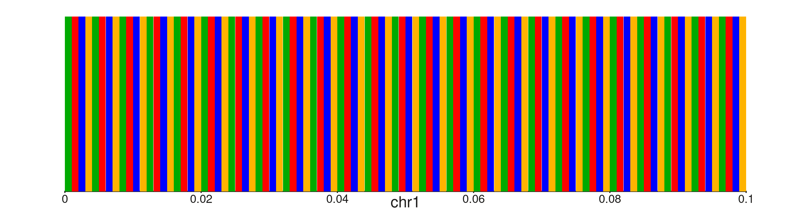
Custom colors
Pass a named character vector to colors to override any
or all of the UCSC defaults. Below, a soft pastel palette is used to
make the track less visually dominant when layered with other
elements.
pastel <- c(A = "#A8D8A8", T = "#F4A7A7", C = "#A7C4F4", G = "#FAD9A1",
N = "#DDDDDD")
seq_plot() %|%
seq_track(windows = win50, track_height = 0.7) %+%
seq_sequence(sequence = seq50, show_letters = TRUE, colors = pastel) -> p
p$plot()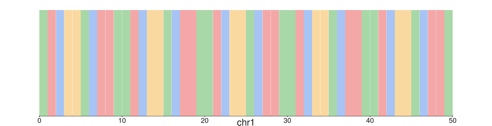
Stacked with a coverage track
rect_height reserves a fraction of the track height for
the rectangles — useful when placing seq_sequence above a
signal track. The sequence track gets a short track_height
allocation so the coverage area dominates.
win60 <- GRanges("chr1", IRanges(1, 60))
seq60 <- paste(rep(c("A","C","G","T"), 15), collapse = "")
cov_xs60 <- seq(1, 60, length.out = 60)
cov_gr60 <- GRanges("chr1", IRanges(start = cov_xs60, width = 1),
depth = 0.4 + 0.4 * sin(seq(0, 2 * pi, length.out = 60)))
seq_plot() %|%
seq_track(windows = win60, track_height = 0.55) %+%
seq_sequence(sequence = seq60,
show_letters = TRUE,
rect_height = 0.7) %__%
seq_track(data = cov_gr60,
mapping = map(x = start, y = depth),
windows = win60) %+%
seq_area(aesthetics = aes(fill = "#4385BE",
color = "#205EA6",
alpha = 0.65,
linewidth = 0.8)) -> p
p$plot()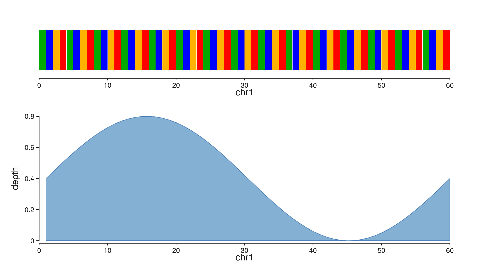
seq_ideogram — chromosome bands
seq_ideogram() consumes a GRanges of
cytogenetic bands with a gieStain mcol and draws each band
as a Giemsa-shaded rectangle. Paired acen bands collapse
into two red triangles meeting at the centromere. Load the bundled hg38
cytoband table with [load_cytobands()].
A single chromosome
create_genome_windows("chr1") expands to a GRanges
spanning the full chromosome, so the ideogram fills the panel
end-to-end.
cb <- load_cytobands()
seq_plot() %|%
seq_track(track_id = "chr1",
windows = create_genome_windows("chr1")) %+%
seq_ideogram(data = cb) -> p
p$plot()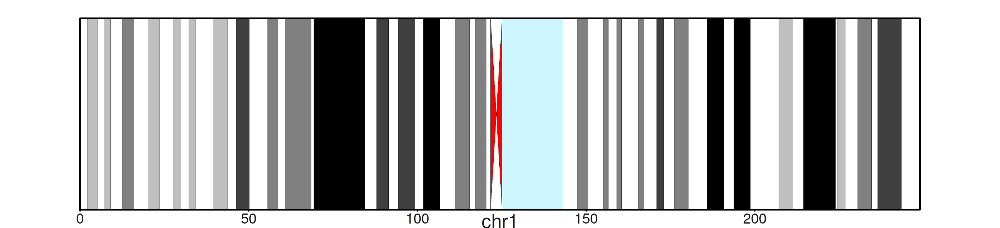
Multi-chromosome strip
A windows GRanges with multiple ranges lays each
chromosome out in its own panel inside the same track. A handful of
chromosomes stacked side-by-side gives an at-a-glance karyotype.
karyo_win <- create_genome_windows(c("chr1", "chr4", "chr7",
"chr14", "chrX"))
seq_plot() %|%
seq_track(track_id = "Karyotype",
windows = karyo_win) %+%
seq_ideogram(data = cb) -> p
p$plot()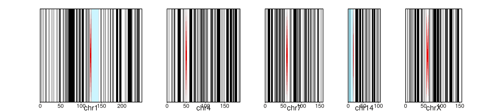
Scope and style
scope = "full" renders the whole chromosome and overlays
a translucent box marking highlight_range.
style = "rounded" adds rounded telomere caps;
telomere.radius = 1 gives a full half-circle.
cb <- load_cytobands()
chr1_full <- GRanges("chr1", IRanges(1, 248956422))
zoom_in <- GRanges("chr1", IRanges(1.2e8, 1.6e8))
p <- seq_plot() %+%
seq_track(windows = zoom_in, height = 1.5) %+%
seq_ideogram(cb,
scope = "full",
style = "rounded",
highlight_range = zoom_in,
aesthetics = aes(
highlight = aes(fill = "red", alpha = 0.5),
telomere.radius = 1
))
p$plot()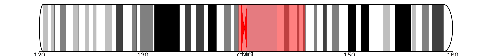
seq_scalebar — length reference
seq_scalebar() draws a horizontal length reference at a
panel position, useful when the x-axis is hidden. The label auto-formats
from the length (1e5 is "100 kb",
2e6 is "2 Mb", 500 is
"500 bp"); override with label = "...".
win_sb <- GRanges("chr1", IRanges(1, 1e6))
p <- seq_plot() %+%
(seq_track(
windows = win_sb,
aesthetics = aes("axis.x1.visible" = FALSE)) %+%
seq_scalebar(length_bp = 1e5,
hjust = 0.95,
vjust = 0.5,
bar_lwd = 1.5))
p$plot()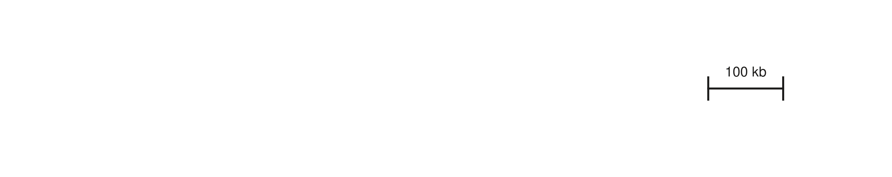
Flipping the axes
By default every seq_track runs genomic
x along its width and lets elements choose the y-axis scale
from their data. Pass scale_y = seq_scale_genomic(...) to
flip the track so genomic position runs along y
instead; then set scale_x = seq_scale_continuous(...) (or
seq_scale_discrete(...)) to carry a scalar / categorical
value on the x-axis. The same data can be rendered either way.
seq_track() exposes three arguments that drive this:
-
scale_x— controls the x-axis scale (defaults to the genomic range of the track’swindows). -
scale_y— controls the y-axis scale.seq_scale_genomic(...)auto-enablesuses_genomic_y. -
y_windows— shorthand to set a genomic y-range without constructing a scale object.
Same gene set, two orientations
A small gene-level table (log2fc per gene, one point per
gene):
gene_meta <- GRanges("chr1",
IRanges(start = seq(1.1e6, 2.9e6, length.out = 14), width = 1e4),
log2fc = c(-2.4, -1.3, 0.9, 2.1, 1.6, -0.5, 2.7,
0.4, -1.8, 1.2, 0.2, 0.8, -2.2, 1.1),
sig = c("down","down","ns","up","up","ns","up",
"ns","down","up","ns","ns","down","up"))
sig_cols <- c(up = "#AF3029", down = "#205EA6", ns = "#878580")Genomic x, scalar y (conventional).
x = start runs along the 1–3 Mb genomic window;
y = log2fc is scalar.
seq_plot() %|%
seq_track(data = gene_meta,
mapping = map(x = start, y = log2fc, color = sig),
windows = win) %+%
seq_segment(mapping = map(x = start, x_end = start,
y = 0, y_end = log2fc, color = sig),
aesthetics = aes(linewidth = 2)) %+%
seq_point(aesthetics = aes(size = 0.9)) -> p
p$plot()
#> 14 out-of-bounds data points excluded! (seq_point)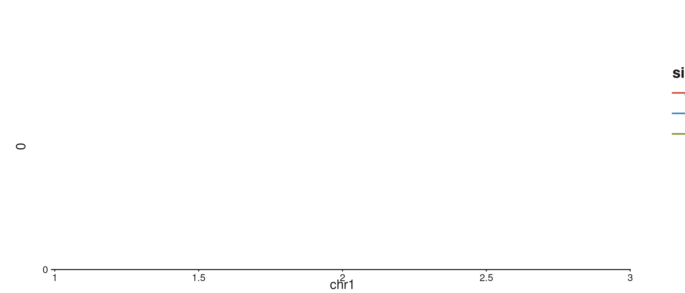
Scalar x, genomic y (flipped). scale_x
carries log2fc in [-3, 3];
scale_y = seq_scale_genomic(win) puts genomic position on
the vertical axis. The lollipops now fan out horizontally from
x = 0, with one row per gene at its true genomic
coordinate.
seq_plot() %|%
seq_track(data = gene_meta,
mapping = map(x = log2fc, y = mid, color = sig),
windows = win,
scale_x = seq_scale_continuous(limits = c(-3, 3)),
scale_y = seq_scale_genomic(win),
track_width = 0.6) %+%
seq_segment(mapping = map(x = 0, x_end = log2fc,
y = mid, y_end = mid, color = sig),
aesthetics = aes(linewidth = 2)) %+%
seq_point(aesthetics = aes(size = 0.9)) -> p
p$plot()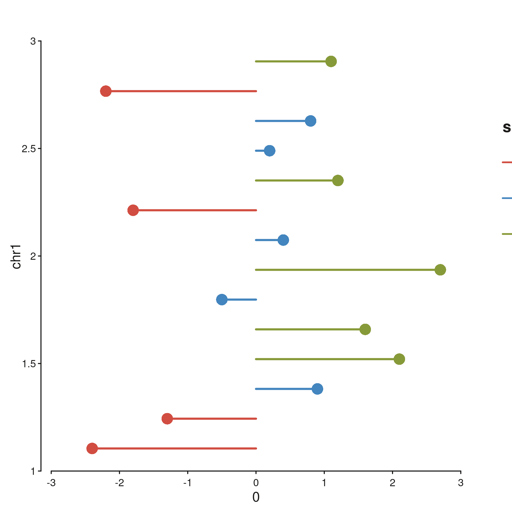
The two plots encode the same table — only the orientation of the
genomic axis changes. In the flipped version the y-tick labels fall back
to Mb units (the genomic yScaleFactor, matching the x-axis
default) so 1.5 Mb reads as 1.5 rather than
1,500,000.
Coverage signal flipped onto the y-axis
The same principle extends to continuous signal. Below, a coverage curve is shown first in the conventional orientation, then flipped so depth runs along x and genomic position along y — useful as a narrow sidebar next to a wider browser panel.
cov_xs <- seq(1.05e6, 2.95e6, length.out = 200)
cov_gr <- GRanges("chr1", IRanges(cov_xs, width = 1),
depth = 0.5 + 0.3 * sin((cov_xs - 1e6) / 3e5))
seq_plot() %|%
seq_track(data = cov_gr,
mapping = map(x = start, y = depth),
windows = win) %+%
seq_area(aesthetics = aes(fill = "#4385BE",
color = "#205EA6",
alpha = 0.6, linewidth = 0.7)) -> p
p$plot()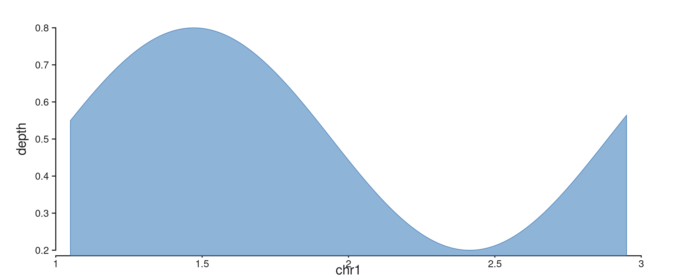
seq_plot() %|%
seq_track(data = cov_gr,
mapping = map(x = depth, y = start),
windows = win) %+%
seq_area(aesthetics = aes(fill = "#4385BE",
color = "#205EA6",
alpha = 0.6, linewidth = 0.7)) -> p
p$plot()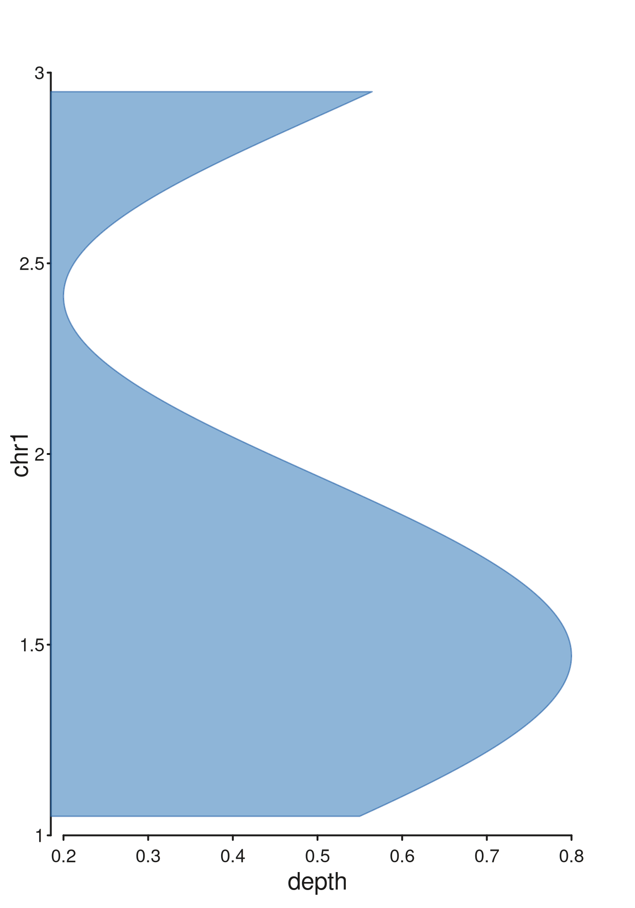